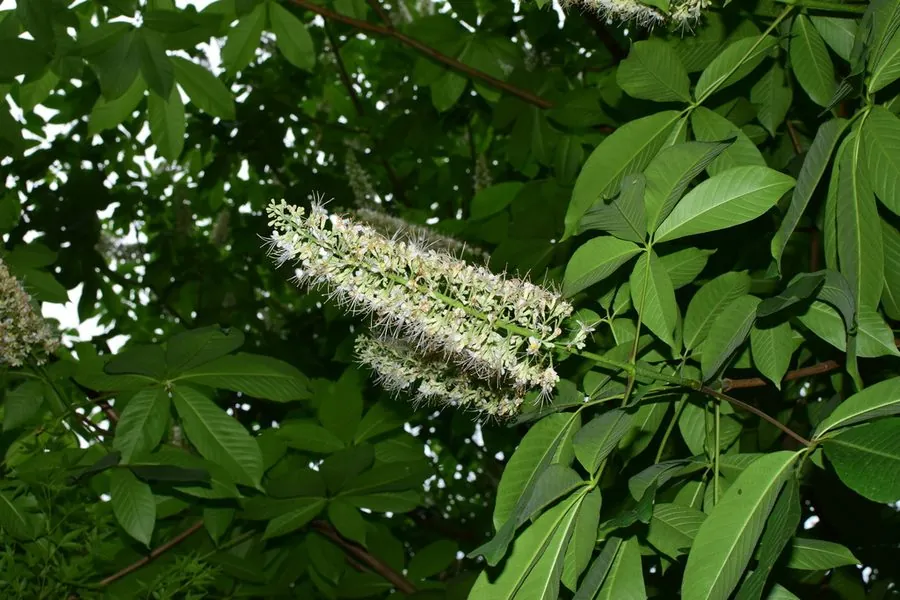

乔木 · 植物界
七叶树 Aesculus chinensis

七叶树科落叶乔木，掌状复叶由 5–7 枚小叶组成，春季开白色烛状花序，种子形似栗子但有毒性。
- 分类
- 门被子植物门纲木兰纲目无患子目科七叶树科属七叶树属
- 栖息环境
- 海拔 700–1500 米的山谷、溪边与杂木林中，喜凉爽湿润、半阴环境
- 地理分布
- 中国河北、山西、陕西、河南、江苏、浙江、安徽等地；寺庙与园林中多栽培
- 保护级别
- 暂无评估；中国未列入国家重点保护野生植物名录
物种志
七叶树为七叶树科七叶树属落叶乔木，高 20–25 米，树皮灰褐色、片状剥落，小枝粗壮。掌状复叶对生，小叶 5–7 枚，倒卵状长圆形，边缘具细锯齿，叶柄长。花杂性，白色或淡黄色，组成直立的长圆锥花序，形如烛台，花期 5–6 月；蒴果球形，成熟时黄褐色、3 瓣开裂，内含 1–2 粒栗褐色、有光泽的种子，形似板栗，果期 9–10 月。
七叶树原产中国黄河流域至长江流域，河北、山西、陕西、河南、江苏、浙江等地有分布，多生于山谷杂木林中，北京、杭州等地的寺庙与园林中常见古树。它喜光，稍耐阴，喜凉爽湿润气候与深厚肥沃、排水良好的土壤，生长较慢，寿命长。种子含七叶树素等成分，有毒，不可像栗子那样食用；树皮与种子入药，有散瘀止痛之效。七叶树因叶片形态端庄，常被植于寺院，杭州灵隐寺前的古七叶树颇为有名。
形态与习性
- 株高20–25 m，树皮片状剥落
- 花期5–6 月，白色花序直立如烛
- 果期9–10 月，蒴果 3 瓣开裂
- 光照喜光，幼树稍耐阴
- 水分喜湿润，忌积水
- 土壤深厚肥沃、排水良好的壤土
- 主要用途庭院与寺庙绿化，树皮种子入药
趣味知识
- 七叶树的种子形似板栗，但含有毒成分，误食会引起呕吐与腹痛。
- 掌状复叶通常由 5–7 枚小叶组成，七叶树之名由此而来。
- 七叶树常被种植于佛教寺院，杭州灵隐寺的古七叶树颇负盛名。
- 欧洲同属的欧洲七叶树种子可提取皂苷，用于制药与洗涤。